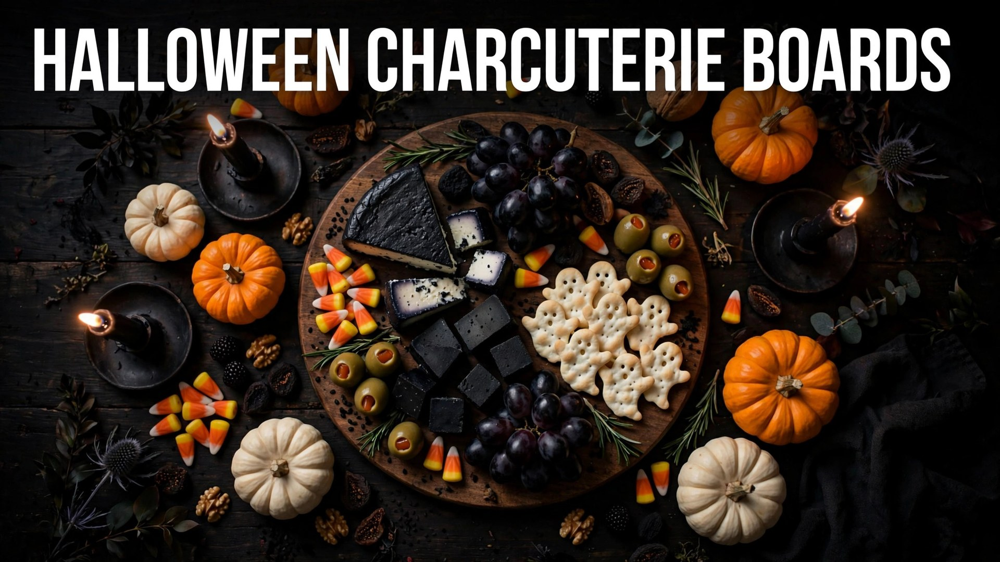

The charcuterie board has conquered every holiday, and Halloween is where it truly shines. A spooky board is part appetizer, part centerpiece, and part conversation starter — guests photograph it before they dare disturb it. The best part? No cooking required. With smart shopping and a few creepy styling tricks, you can build a Halloween charcuterie board in under an hour that looks like it took all day.
This 2026 guide walks you through everything: choosing the right board, the cheeses and meats that work best, spooky styling ideas from cheese skulls to olive eyeballs, sweet boards for dessert, and the practical tips that keep your display fresh all party long.
Choosing Your Board & Building Blocks
Start with the vessel: a large wooden cutting board, a slate tile, or a black serving tray all work — dark backgrounds make Halloween colors pop. For big parties, skip the board entirely and build a grazing table on butcher paper. Plan roughly 3–4 ounces of cheese and 2–3 ounces of meat per person for an appetizer board. Your building blocks: 3–4 cheeses with varied textures, 2–3 cured meats, crackers and bread, fresh and dried fruit, nuts, olives and pickles, something sweet like honey or chocolate, and dips. Odd numbers look best — three cheeses beats four, visually.
Best Cheeses & Meats for a Halloween Board
- Cheeses: aged cheddar, brie, gouda, blue cheese, and goat cheese. Add a cheese ball shaped into a pumpkin (coated in crushed cheddar crackers) as your centerpiece.
- Meats: salami, prosciutto, soppressata, and pepperoni. Fold salami into roses or drape prosciutto in loose ribbons.
- Crackers & bread: plain water crackers, breadsticks ("witch brooms"), and dark rye or pumpernickel for color contrast.
- Fruit: black grapes, figs, blackberries, dried apricots, and pomegranate seeds for jewel-like color pops.
- Extras: marcona almonds, cornichons, dark chocolate squares, and a small jar of honey with a wooden dipper.
Spooky Styling Ideas That Wow
This is where a Halloween board separates itself from an ordinary one. The tricks are simple and cheap:
- Cheese skull: press soft cheese (like Boursin) into a skull-shaped mold, or carve a brie wheel with a small knife. Instant centerpiece.
- Olive eyeballs: stuff large green olives with cream cheese or pimento, then dot with a tiny piece of black olive. Scatter among the meats.
- Salami roses: fold salami slices over the rim of a shot glass, flip, and you have a rose. Cluster three together.
- Brie mummy: wrap a brie wheel in strips of puff pastry, bake until golden, add olive eyes.
- Spiderweb dip: pipe sour cream in concentric circles over black bean dip, then drag a toothpick through for a web.
- Witch brooms: tie a pretzel stick to a small cheese wedge with chive "string."
- Dry-ice fog: a small bowl of dry ice tucked behind the board (never touching food) adds drama for photos.
Sweet Halloween Boards: Candy & Dessert
For the dessert table, build a sweet board: brownies cut into tombstones, ghost meringues, candy corn, chocolate-covered pretzels, mini donuts, marshmallows, and fresh berries. Add small bowls of caramel and chocolate sauce for dipping. A buttercream "graveyard" — chocolate cookie crumb "dirt" with Milano cookie tombstones — makes a legendary centerpiece. Sweet boards are also the easiest win for kids' parties: no knives needed, everything is finger food, and the sugar high is someone else's problem.
Keeping Your Board Fresh All Night
Cheese sweats and meat dries out, so timing matters. Assemble no more than an hour before guests arrive, and keep the board refrigerated until then. Take cheese out 30 minutes before serving — room-temperature cheese tastes dramatically better. On warm evenings, nest the board over a tray of ice or serve in two smaller batches, refreshing halfway through. Keep crackers separate until serving so they stay crisp, replenish nuts and fruit as they disappear, and have backup supplies in the kitchen for a quick mid-party restock. Small tongs and cheese knives at every cluster keep hands (mostly) out of the food.
Budget & Dietary-Friendly Boards
A stunning board does not require expensive cheese. Store-brand cheddar, cream cheese, and mozzarella pearls look great styled well; bulk-bin nuts and seasonal fruit keep costs down. For dietary needs, build zones rather than separate boards: a corner of gluten-free crackers, clearly labeled nut-free sections, and a fully vegan mini-board with hummus, roasted vegetables, olives, dried fruit, and dairy-free cheese. Label anything with common allergens — a few handwritten tent cards take two minutes and save guests the awkward asking.
For Halloween night itself, keep a small backup board in the fridge. The main display will be demolished within the first hour — a fresh refill board brought out mid-party makes you look like a hosting genius with almost no extra effort.
Board Shapes & Creative Themes
Move beyond the rectangle. Arrange your Halloween board in the shape of a pumpkin (round board, orange foods in the center), a bat (dark foods fanned into wings), or a ghost (white foods on a black slate). Theme the whole spread: a "haunted forest" board with rosemary sprigs as trees and mushroom-shaped cheeses, a "witch's pantry" with potion-bottle dips and broomstick breadsticks, or a "monster mash" with everything in lurid greens and purples. Mini individual boards — small slates or plates per guest — feel luxurious and solve the double-dipping problem entirely. Whatever shape you choose, photograph it before guests arrive; Halloween boards have a lifespan of about eleven minutes once the party starts.